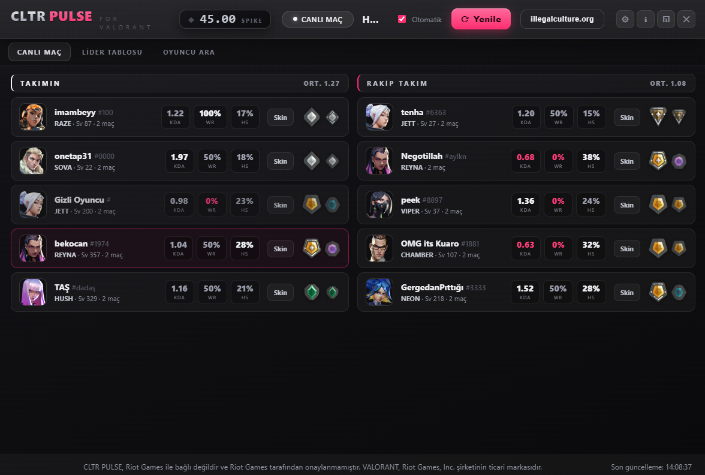
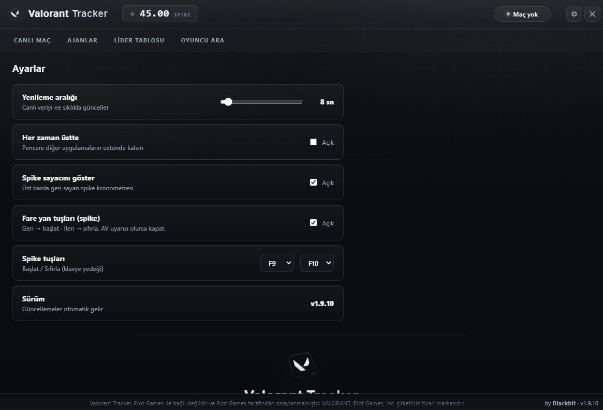

Canlı Maç
İki takım, tek bakış
Maç bulunur bulunmaz her iki takımın oyuncuları düşer. Rank, peak, KDA, kazanma ve kafa oranı anında önünde.
- Güncel + zirve rank görselleri
- Takım ortalaması KDA
- Premade / duo grupları renk ve simgeyle

Spike Sayacı & Ayarlar
Senin kurallarınla
Salise hassasiyetinde spike geri sayımı ve defuse pencereleri. Yenileme hızı, saydamlık, cam efekti ve kısayollar tamamen senin kontrolünde.
- 45.00 → 0.00 defuse penceresi renkleri
- Atanabilir başlat / sıfırla tuşları
- Cam efekti kapatılabilir (daha iyi FPS)

Lider Tablosu & Arama
Bölgenin zirvesi
Resmi ranked lider tablosunu takip et, isim#tag ile herhangi bir oyuncuyu ara; rankını ve istatistiklerini gör.
- Bölgesel ilk 50 ranked
- İsim#tag ile oyuncu arama
- Otomatik güncellenen uygulama